Plots of covid-19 case count data
The nextstrain collaborative effort has a nice FAQ if you want general information about the COVID-19 coronavirus: https://nextstrain.org/help/coronavirus/FAQ
Researchers at the Johns Hopkins University Center for Systems Science and Engineering have developed a nice dashboard for viewing the case counts of covid-19 on a map. Not only do they go through the very laborious task of compiling the counts daily, but they are kind enough to share that data in easy-to-parse CSV files in a GitHub repository. Note their Terms of Use "This GitHub repo and its contents herein, including all data, mapping, and analysis, copyright 2020 Johns Hopkins University, all rights reserved, is provided to the public strictly for educational and academic research purposes. The Website relies upon publicly available data from multiple sources, that do not always agree. The Johns Hopkins University hereby disclaims any and all representations and warranties with respect to the Website, including accuracy, fitness for use, and merchantability. Reliance on the Website for medical guidance or use of the Website in commerce is strictly prohibited."
I found myself graphing the counts of cases by country on a log scale, frequently. So I decided to generate those plots via scripts. My code for doing that is at https://github.com/mtholder/sars-cov-2, but it doesn't do a whole lot more than group their data by country and regions. All of the hard work need to generate these graphs is being done by the the Johns Hopkins CSSE folks; the thousands of health care workers who are collecting the data; and large number of public health workers who are making the data available. Some notes:
- Variation in the time of day that data is gathered makes the plots of new cases for a day very noisy, even at large geographic scales. So, the new cases plots are the average number of new cases for the 7 days prior to the date shown on the x-axis. (Prior to 25 Apr, I was looking at a 3 day window, but now that there is a substantial amount of data, coarsening to a 7 day window is nice because it smoooths over the effect of weekends on reporting).
- The regions I used for aggregating the countries are fairly arbitrary. They reflect a mixture of geographic proximity and pragmatic considerations about what countries seem to be affected in similar ways by the disease in early March, 2020 If you want to look at the python dictionaries I'm using to group countries into, see: transpose_and_sum_by_country.py#L6-L62
- Within each region, countries are listed alphabetically
- Countries with fewer than 5 cases are not plotted
- The data are currently being read from the 'csse_covid_19_data/csse_covid_19_daily_reports' directory of the JHU git repo, because the data in the csse_covid_19_data/csse_covid_19_time_series underwent some change wrt how reporting was done within countries. See their FAQ and issue-382.
- The raw data do show some drops in the cumulative case counts in several countries. This would be impossible if
the data were completely accurate. These errors creep in because the JHU researchers aggregating several different
sources (as they note in their Terms of Use statement). My scripts do not attempt to correct these issues. They do
attempt to correct cases of the same locality having multiple names
(see the
aliasesvariable in transpose_and_sum_by_country.py) and some localities having duplicate entries in the daily reports (see theknown_dupvariable in my transpose_and_sum_by_country.py). - The Johns Hopkins U. data is updated about once a day (usually in the late afternoon/evening in USA). See https://www.worldometers.info/coronavirus/ if you are looking for data that is updated more frequently.
- When "(+#%)" is reported, this is the percent daily growth rate of the count calculated over the last 7 days (for locations that had at least 10 counts at the earlier time point in that time range, and are showing appreciable growth in confirmed cases).
| Country/region | cases in black solid active in black dashed recovered in blue deaths in red | Mean # cases (black, left axis) and death (red, right axis)/day for prior week |
|---|---|---|
world cases: 83,424,446 (+0.7%) deaths: 1,818,116 (+0.6%) recovered: 47,010,049 active: 34,596,281 |  | 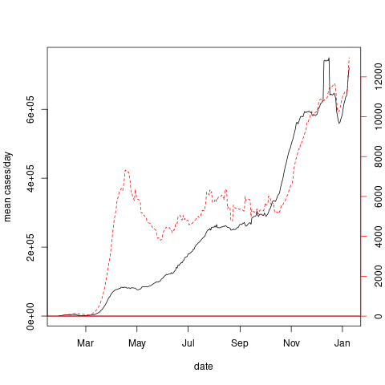 |
east asia cases: 395,562 (+1.2%) deaths: 8,999 (+0.8%) recovered: 325,679 active: 60,884 |  | 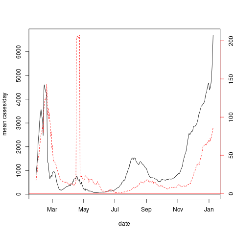 |
mainland china cases: 87,071 deaths: 4,634 recovered: 82,064 active: 373 |  | 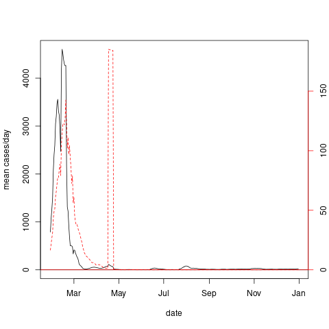 |
east asia without china cases: 308,491 (+1.6%) deaths: 4,365 (+1.7%) recovered: 243,615 active: 60,511 |  | 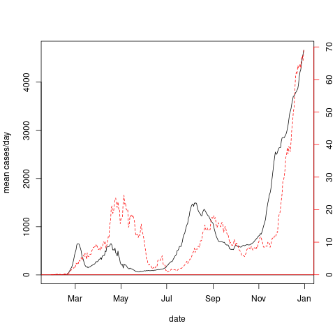 |
hong kong cases: 8,846 (+0.7%) deaths: 148 (+1.3%) recovered: 7,813 active: 885 |  | 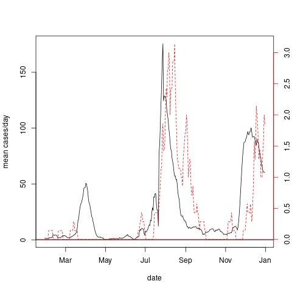 |
japan cases: 235,811 (+1.6%) deaths: 3,292 (+1.5%) recovered: 191,295 active: 41,224 |  | 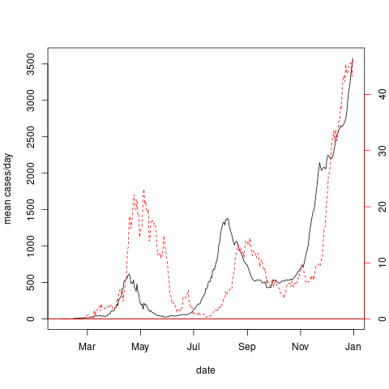 |
macau cases: 46 deaths: 0 recovered: 46 active: 0 |  | 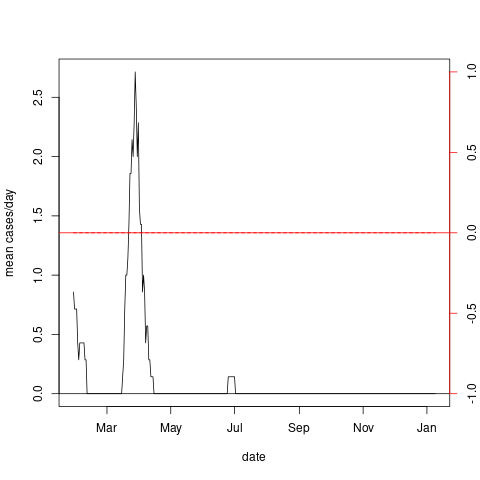 |
mongolia cases: 1,220 (+1.8%) deaths: 1 recovered: 837 active: 382 |  | 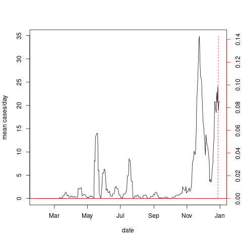 |
taiwan cases: 799 (+0.4%) deaths: 7 recovered: 671 active: 121 |  | 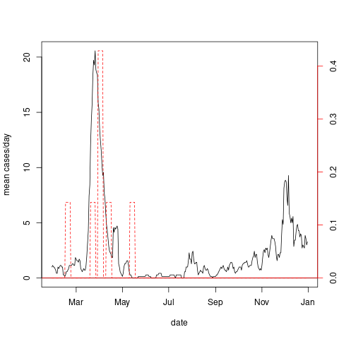 |
south korea cases: 61,769 (+1.7%) deaths: 917 (+2.5%) recovered: 42,953 active: 17,899 |  | 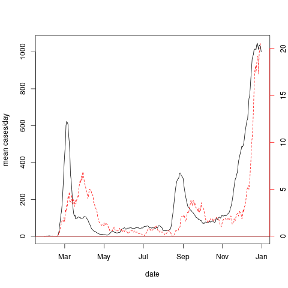 |
europe cases: 23,805,767 (+0.9%) deaths: 545,149 (+0.8%) recovered: 11,348,917 active: 11,911,701 |  | 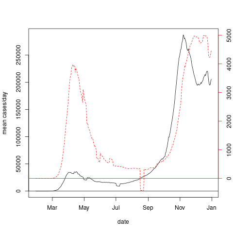 |
albania cases: 58,316 (+0.9%) deaths: 1,181 (+0.7%) recovered: 33,634 active: 23,501 |  | 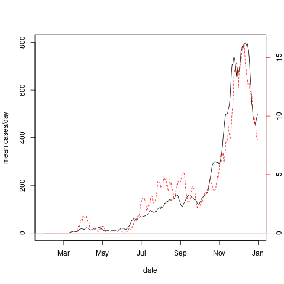 |
andorra cases: 8,049 (+0.6%) deaths: 84 (+0.2%) recovered: 7,432 active: 533 |  | 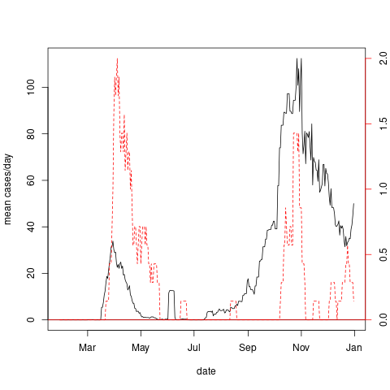 |
austria cases: 360,815 (+0.6%) deaths: 6,222 (+1.1%) recovered: 332,952 active: 21,641 |  | 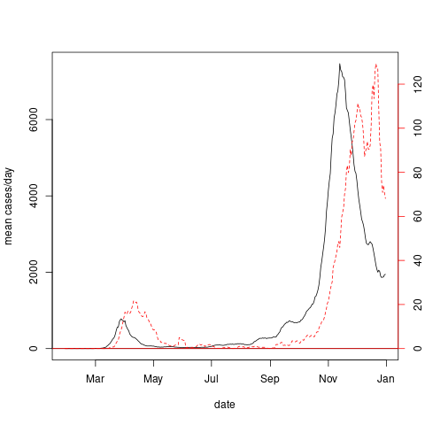 |
belarus cases: 194,284 (+1.0%) deaths: 1,424 (+0.7%) recovered: 175,147 active: 17,713 |  | 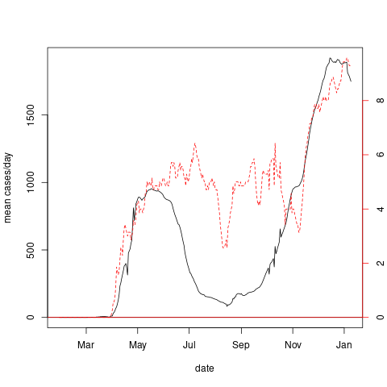 |
belgium cases: 646,496 (+0.3%) deaths: 19,528 (+0.4%) |  |  |
bosnia and herzegovina cases: 110,985 (+0.4%) deaths: 4,050 (+0.6%) recovered: 77,225 active: 29,710 |  | 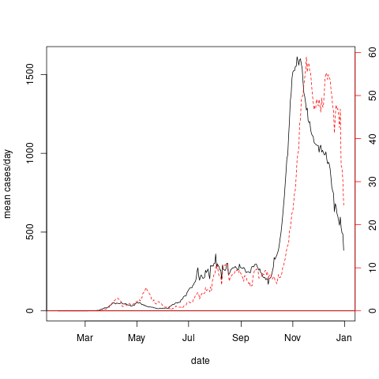 |
bulgaria cases: 202,266 (+0.4%) deaths: 7,576 (+1.1%) recovered: 119,527 active: 75,163 |  | 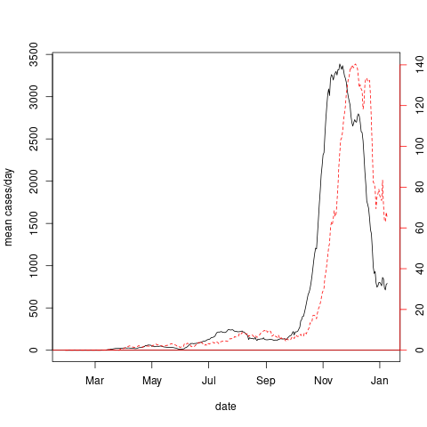 |
croatia cases: 210,837 (+0.6%) deaths: 3,920 (+1.8%) recovered: 198,018 active: 8,899 |  | 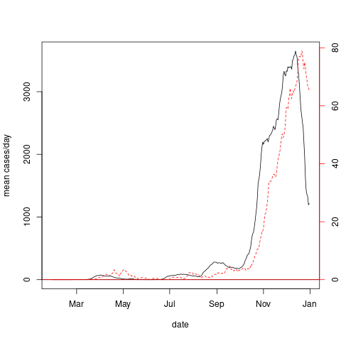 |
cyprus cases: 22,019 (+1.9%) deaths: 119 (+1.5%) recovered: 2,057 active: 19,843 |  | 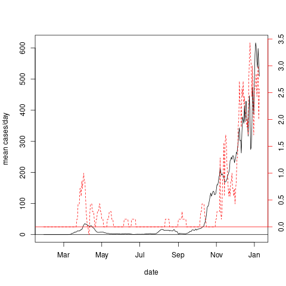 |
czech republic cases: 718,661 (+1.2%) deaths: 11,580 (+1.0%) recovered: 592,581 active: 114,500 |  | 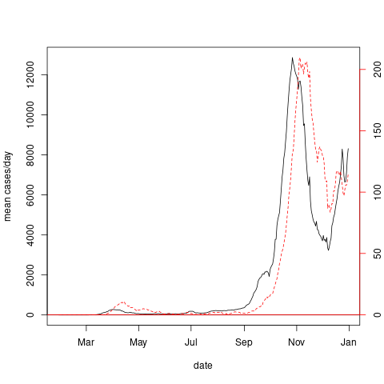 |
denmark cases: 164,116 (+1.6%) deaths: 1,298 (+2.2%) recovered: 127,844 active: 34,974 |  | 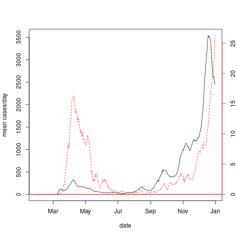 |
estonia cases: 27,990 (+2.2%) deaths: 229 (+2.3%) recovered: 18,326 active: 9,435 |  | 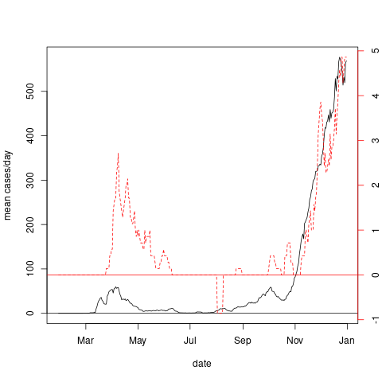 |
finland cases: 36,107 (+0.7%) deaths: 561 (+1.0%) recovered: 29,000 active: 6,546 |  | 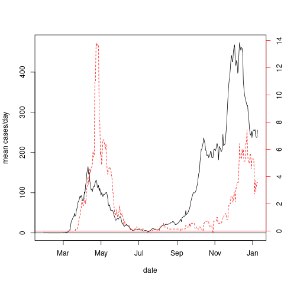 |
france cases: 2,677,666 (+0.5%) deaths: 64,759 (+0.5%) recovered: 200,142 active: 2,412,765 |  | 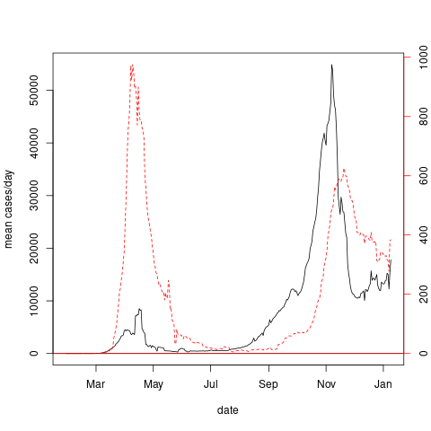 |
germany cases: 1,760,520 (+1.1%) deaths: 33,791 (+2.0%) recovered: 1,350,708 active: 376,021 |  |  |
greece cases: 138,850 (+0.5%) deaths: 4,838 (+1.2%) recovered: 93,764 active: 40,248 |  | 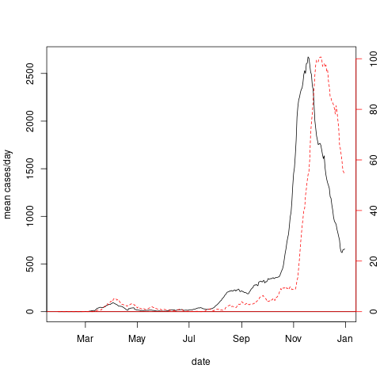 |
hungary cases: 322,514 (+0.5%) deaths: 9,537 (+1.3%) recovered: 150,102 active: 162,875 |  | 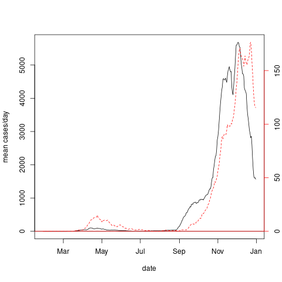 |
iceland cases: 5,754 (+0.2%) deaths: 29 (+0.5%) recovered: 5,578 active: 147 |  | 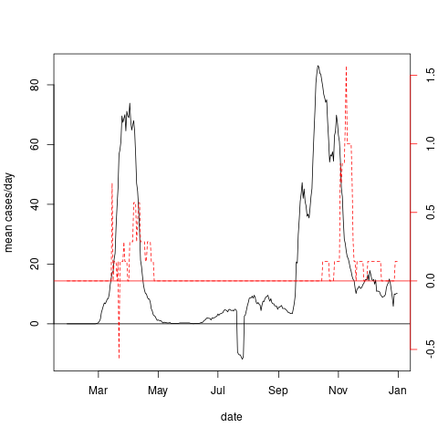 |
ireland cases: 91,779 (+1.4%) deaths: 2,237 (+0.3%) recovered: 23,364 active: 66,178 |  | 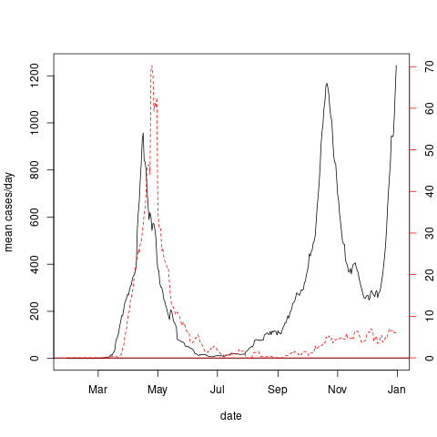 |
italy cases: 2,107,166 (+0.7%) deaths: 74,159 (+0.6%) recovered: 1,463,111 active: 569,896 |  | 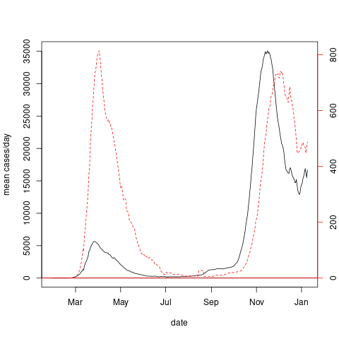 |
kosovo cases: 51,144 (+0.5%) deaths: 1,332 (+0.6%) recovered: 40,989 active: 8,823 |  | 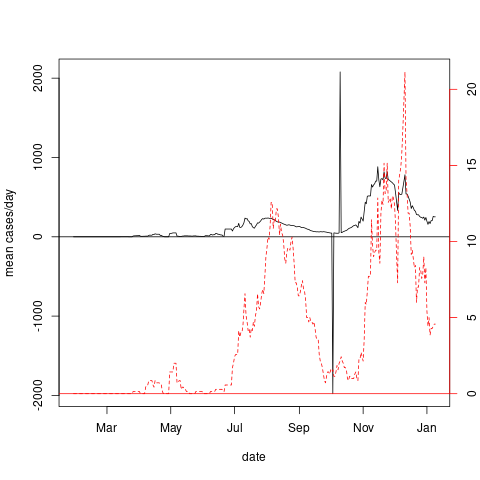 |
latvia cases: 40,904 (+2.4%) deaths: 635 (+3.9%) recovered: 27,113 active: 13,156 |  | 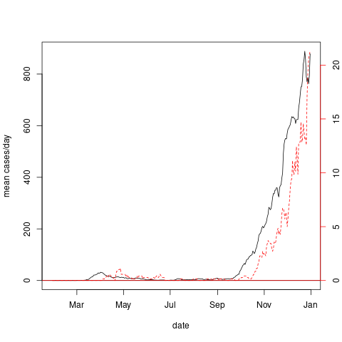 |
lithuania cases: 140,579 (+1.8%) deaths: 1,458 (+3.0%) recovered: 71,028 active: 68,093 |  | 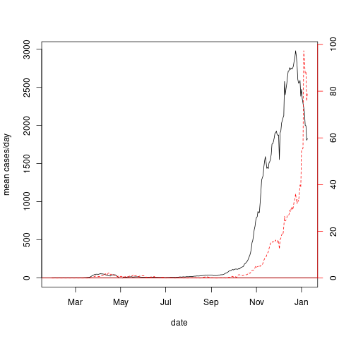 |
liechtenstein cases: 2,136 (+1.5%) deaths: 39 (+3.8%) recovered: 1,810 active: 287 |  | 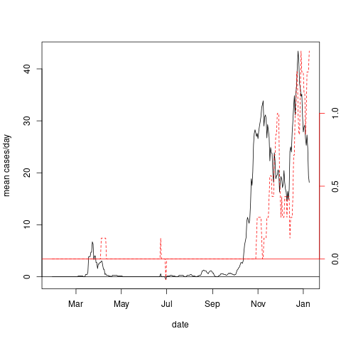 |
luxembourg cases: 46,415 (+0.4%) deaths: 495 (+1.1%) recovered: 40,978 active: 4,942 |  | 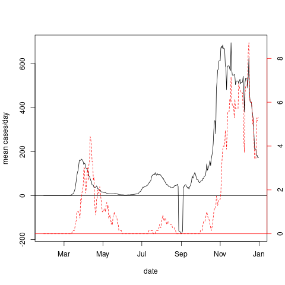 |
malta cases: 12,774 (+0.8%) deaths: 219 (+1.1%) recovered: 11,121 active: 1,434 |  | 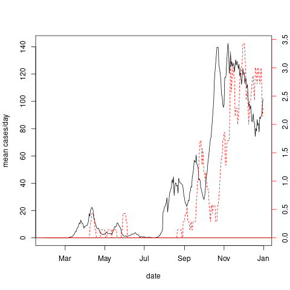 |
moldova cases: 144,818 (+0.5%) deaths: 2,985 (+0.7%) recovered: 130,643 active: 11,190 |  | 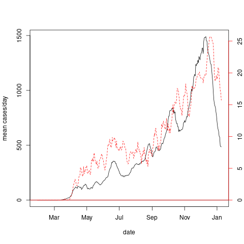 |
monaco cases: 875 (+1.6%) deaths: 3 recovered: 708 active: 164 |  | 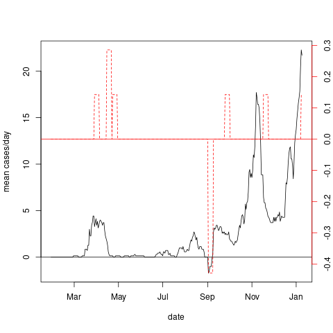 |
montenegro cases: 48,247 (+0.9%) deaths: 682 (+0.7%) recovered: 38,580 active: 8,985 |  | 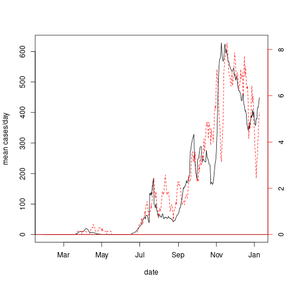 |
netherlands cases: 808,382 (+1.2%) deaths: 11,525 (+0.8%) recovered: 9,585 active: 787,272 |  | 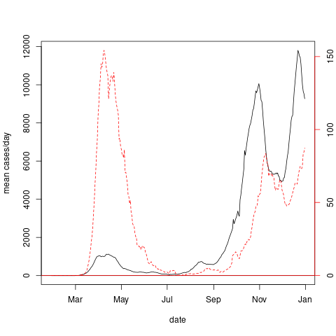 |
north macedonia cases: 83,329 (+0.5%) deaths: 2,503 (+0.8%) recovered: 61,447 active: 19,379 |  |  |
norway cases: 49,567 (+1.1%) deaths: 436 (+0.5%) recovered: 17,998 active: 31,133 |  | 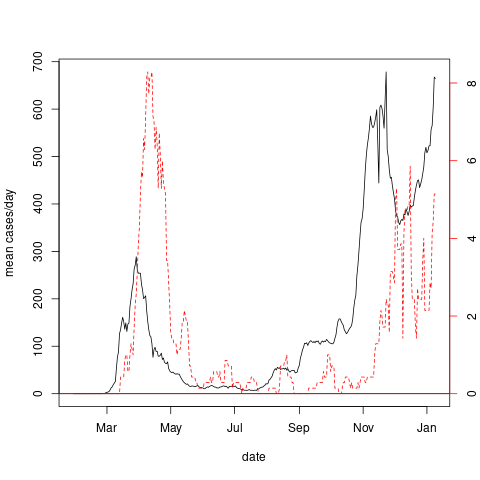 |
poland cases: 1,294,878 (+0.6%) deaths: 28,554 (+0.9%) recovered: 1,036,138 active: 230,186 |  |  |
portugal cases: 413,678 (+0.9%) deaths: 6,906 (+1.1%) recovered: 334,276 active: 72,496 |  | 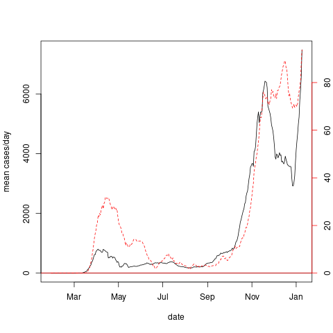 |
romania cases: 632,263 (+0.5%) deaths: 15,767 (+0.8%) recovered: 560,793 active: 55,703 |  | 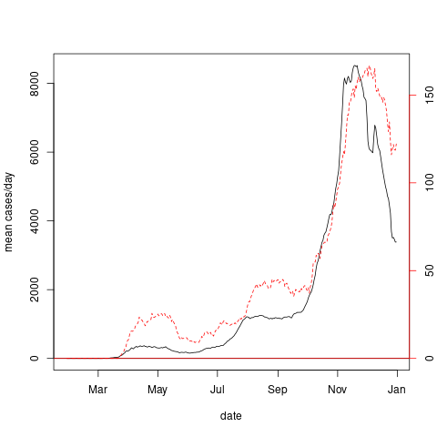 |
russia cases: 3,127,347 (+0.9%) deaths: 56,271 (+1.0%) recovered: 2,527,722 active: 543,354 |  | 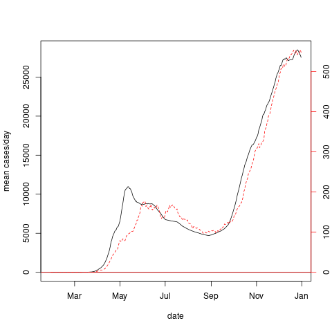 |
san marino cases: 2,428 (+1.2%) deaths: 59 (+0.7%) recovered: 2,042 active: 327 |  | 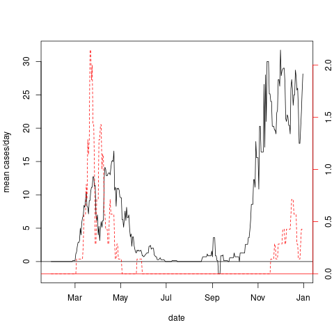 |
serbia cases: 337,923 (+0.9%) deaths: 3,211 (+1.6%) |  | 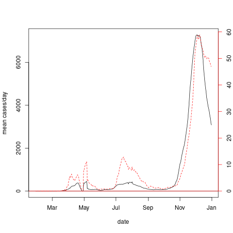 |
slovakia cases: 179,543 (+1.5%) deaths: 2,138 (+3.1%) recovered: 125,971 active: 51,434 |  | 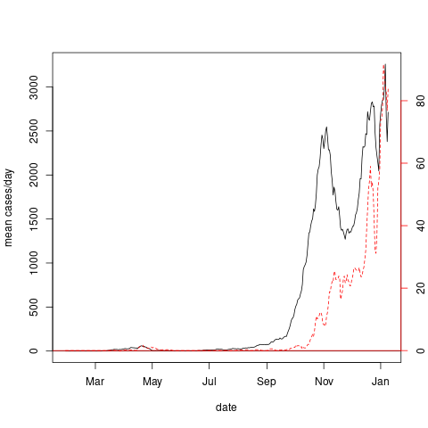 |
slovenia cases: 122,152 (+1.2%) deaths: 2,697 (+1.2%) recovered: 99,382 active: 20,073 |  | 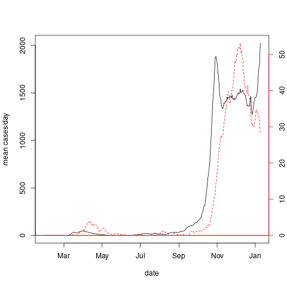 |
spain cases: 1,928,265 (+0.6%) deaths: 50,837 (+0.3%) recovered: 150,376 active: 1,727,052 |  | 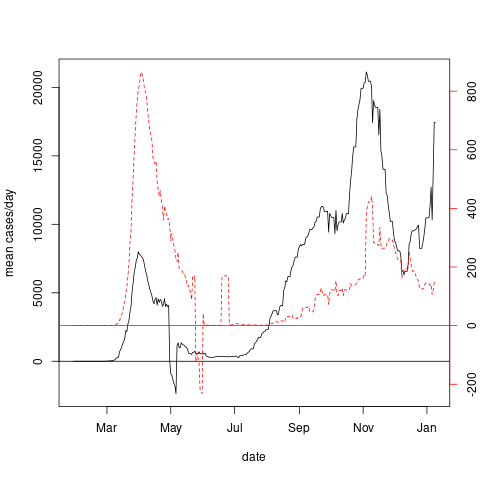 |
sweden cases: 437,379 (+1.4%) deaths: 8,727 (+0.8%) |  | 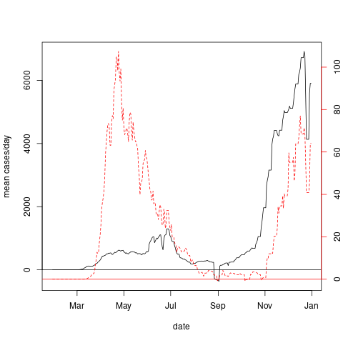 |
switzerland cases: 452,296 (+0.8%) deaths: 7,645 (+1.1%) recovered: 317,600 active: 127,051 |  | 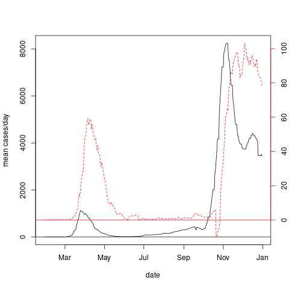 |
uk cases: 2,496,231 (+1.9%) deaths: 73,622 (+0.8%) recovered: 5,479 active: 2,417,130 |  | |
ukraine cases: 1,086,997 (+0.8%) deaths: 19,281 (+0.9%) recovered: 736,611 active: 331,105 |  | |
vatican city cases: 27 deaths: 0 recovered: 15 active: 12 |  | |
north am cases: 21,978,425 (+1.0%) deaths: 487,172 (+0.7%) recovered: 1,568,420 active: 19,922,833 |  | |
canada cases: 584,396 (+1.2%) deaths: 15,631 (+0.8%) recovered: 493,625 active: 75,140 |  | |
mexico cases: 1,426,094 (+0.7%) deaths: 125,807 (+0.5%) recovered: 1,074,795 active: 225,492 |  | |
us cases: 19,967,935 (+1.0%) deaths: 345,734 (+0.7%) |  | |
middle east cases: 4,941,262 (+0.6%) deaths: 54,964 (+0.7%) recovered: 4,575,591 active: 310,707 |  | |
bahrain cases: 92,675 (+0.2%) deaths: 352 (+0.1%) recovered: 90,217 active: 2,106 |  | |
iraq cases: 595,291 (+0.2%) deaths: 12,813 (+0.1%) recovered: 537,841 active: 44,637 |  | |
israel cases: 423,262 (+1.2%) deaths: 3,325 (+0.7%) recovered: 376,322 active: 43,615 |  |  |
jordan cases: 294,494 (+0.5%) deaths: 3,834 (+0.6%) recovered: 270,551 active: 20,109 |  | |
kuwait cases: 150,584 (+0.1%) deaths: 934 (+0.1%) recovered: 146,517 active: 3,133 |  | |
lebanon cases: 181,503 (+1.3%) deaths: 1,468 (+1.2%) recovered: 127,959 active: 52,076 |  | |
oman cases: 128,867 (+0.1%) deaths: 1,499 (+0.1%) recovered: 121,890 active: 5,478 |  | |
qatar cases: 143,834 (+0.1%) deaths: 245 (+0.1%) recovered: 141,422 active: 2,167 |  | |
saudi arabia cases: 362,741 deaths: 6,223 (+0.1%) recovered: 353,853 active: 2,665 |  | |
syria cases: 11,434 (+1.0%) deaths: 711 (+1.2%) recovered: 5,350 active: 5,373 |  | |
turkey cases: 2,208,652 (+0.7%) deaths: 20,881 (+1.3%) recovered: 2,100,650 active: 87,121 |  | |
united arab emirates cases: 207,822 (+0.7%) deaths: 669 (+0.5%) recovered: 184,442 active: 22,711 |  | |
west bank and gaza cases: 138,004 (+1.0%) deaths: 1,400 (+1.7%) recovered: 117,183 active: 19,421 |  | |
yemen cases: 2,099 deaths: 610 (+0.1%) recovered: 1,394 active: 95 | ||
se asia cases: 1,522,818 (+0.8%) deaths: 34,667 (+0.8%) recovered: 1,311,585 active: 176,566 |  | |
brunei cases: 157 (+0.5%) deaths: 3 recovered: 149 active: 5 |  | |
burma cases: 124,630 (+0.6%) deaths: 2,682 (+0.8%) recovered: 107,069 active: 14,879 |  | |
cambodia cases: 378 (+0.6%) deaths: 0 recovered: 362 active: 16 |  | |
fiji cases: 49 (+0.9%) deaths: 2 recovered: 44 active: 3 |  | |
indonesia cases: 743,198 (+1.0%) deaths: 22,138 (+1.0%) recovered: 611,097 active: 109,963 |  | |
laos cases: 41 deaths: 0 recovered: 40 active: 1 |  |  |
malaysia cases: 113,010 (+1.7%) deaths: 471 (+0.8%) recovered: 88,941 active: 23,598 |  | |
philippines cases: 474,064 (+0.3%) deaths: 9,244 (+0.3%) recovered: 439,796 active: 25,024 |  | |
thailand cases: 7,163 (+2.8%) deaths: 63 (+0.7%) recovered: 4,273 active: 2,827 |  | |
singapore cases: 58,599 deaths: 29 recovered: 58,449 active: 121 |  | |
solomon islands cases: 17 deaths: 0 recovered: 5 active: 12 | ||
timor-leste cases: 44 (+1.0%) deaths: 0 recovered: 32 active: 12 |  | |
vietnam cases: 1,465 (+0.3%) deaths: 35 recovered: 1,325 active: 105 |  | |
central asia cases: 13,835,464 (+0.2%) deaths: 238,784 (+0.2%) recovered: 12,965,025 active: 631,655 |  | |
afghanistan cases: 51,526 (+0.2%) deaths: 2,191 (+0.4%) recovered: 41,727 active: 7,608 |  |  |
armenia cases: 159,409 (+0.3%) deaths: 2,823 (+0.6%) recovered: 142,801 active: 13,785 |  | |
azerbaijan cases: 218,700 (+0.6%) deaths: 2,641 (+1.5%) recovered: 184,422 active: 31,637 |  | |
bangladesh cases: 513,510 (+0.2%) deaths: 7,559 (+0.3%) recovered: 457,459 active: 48,492 |  | |
bhutan cases: 670 (+3.7%) deaths: 0 recovered: 448 active: 222 |  | |
georgia cases: 227,420 (+0.7%) deaths: 2,505 (+1.4%) recovered: 211,727 active: 13,188 |  | |
india cases: 10,266,674 (+0.2%) deaths: 148,738 (+0.2%) recovered: 9,860,280 active: 257,656 |  | |
iran cases: 1,225,142 (+0.5%) deaths: 55,223 (+0.2%) recovered: 988,833 active: 181,086 |  | |
kazakhstan cases: 201,196 (+0.4%) deaths: 2,761 (+0.4%) recovered: 175,558 active: 22,877 |  | |
kyrgyzstan cases: 81,034 (+0.2%) deaths: 1,355 (+0.2%) recovered: 75,918 active: 3,761 |  | |
maldives cases: 13,757 (+0.2%) deaths: 48 recovered: 13,141 active: 568 |  | |
nepal cases: 260,593 (+0.2%) deaths: 1,856 (+0.4%) recovered: 252,359 active: 6,378 |  | |
pakistan cases: 482,178 (+0.5%) deaths: 10,176 (+0.6%) recovered: 437,229 active: 34,773 |  | |
sri lanka cases: 43,299 (+1.4%) deaths: 204 (+1.4%) recovered: 35,329 active: 7,766 |  | |
tajikistan cases: 13,296 (+0.2%) deaths: 90 (+0.2%) recovered: 12,851 active: 355 | ||
uzbekistan cases: 77,060 (+0.1%) deaths: 614 recovered: 74,943 active: 1,503 |  | |
africa cases: 2,758,226 (+0.9%) deaths: 65,466 (+0.9%) recovered: 2,297,749 active: 395,011 |  | |
algeria cases: 99,610 (+0.4%) deaths: 2,756 (+0.3%) recovered: 67,127 active: 29,727 |  | |
angola cases: 17,553 (+0.4%) deaths: 405 (+0.4%) recovered: 11,044 active: 6,104 |  | |
benin cases: 3,251 (+0.2%) deaths: 44 recovered: 3,061 active: 146 |  | |
botswana cases: 14,805 (+0.8%) deaths: 42 (+0.7%) recovered: 12,136 active: 2,627 |  |  |
burundi cases: 818 (+0.8%) deaths: 2 recovered: 687 active: 129 |  | |
burkina faso cases: 6,707 (+1.7%) deaths: 85 (+1.4%) recovered: 5,100 active: 1,522 |  | |
cabo verde cases: 11,840 (+0.2%) deaths: 113 (+0.1%) recovered: 11,559 active: 168 |  | |
cameroon cases: 26,277 deaths: 448 recovered: 24,892 active: 937 |  | |
chad cases: 2,113 (+1.1%) deaths: 104 (+0.3%) recovered: 1,704 active: 305 |  | |
central african republic cases: 4,963 deaths: 63 recovered: 1,924 active: 2,976 |  | |
comoros cases: 823 (+2.0%) deaths: 10 recovered: 705 active: 108 | ||
congo cases: 17,658 (+1.2%) deaths: 591 (+0.4%) recovered: 14,701 active: 2,366 |  | |
congo-brazzaville cases: 7,107 (+1.1%) deaths: 108 (+1.1%) recovered: 5,846 active: 1,153 |  | |
djibouti cases: 5,831 (+0.1%) deaths: 61 recovered: 5,728 active: 42 |  | |
egypt cases: 138,062 (+1.0%) deaths: 7,631 (+0.7%) recovered: 112,105 active: 18,326 |  | |
equatorial guinea cases: 5,277 (+0.1%) deaths: 86 (+0.2%) recovered: 5,136 active: 55 |  | |
eritrea cases: 1,252 (+4.0%) deaths: 1 recovered: 643 active: 608 |  | |
eswatini cases: 9,358 (+2.2%) deaths: 205 (+4.2%) recovered: 7,073 active: 2,080 |  | |
ethiopia cases: 124,264 (+0.3%) deaths: 1,923 (+0.3%) recovered: 112,096 active: 10,245 |  | |
gabon cases: 9,571 (+0.2%) deaths: 64 recovered: 9,388 active: 119 |  | |
ghana cases: 54,771 (+0.2%) deaths: 335 (+0.1%) recovered: 53,594 active: 842 |  | |
guinea cases: 13,722 (+0.1%) deaths: 81 (+0.2%) recovered: 13,141 active: 500 |  | |
guinea-bissau cases: 2,452 deaths: 45 recovered: 2,397 active: 10 |  | |
ivory coast cases: 22,490 (+0.3%) deaths: 137 (+0.4%) recovered: 21,934 active: 419 |  | |
kenya cases: 96,458 (+0.2%) deaths: 1,670 (+0.2%) recovered: 78,737 active: 16,051 |  | |
lesotho cases: 3,094 (+1.8%) deaths: 51 recovered: 1,480 active: 1,563 | ||
liberia cases: 1,779 deaths: 83 recovered: 1,406 active: 290 |  |  |
libya cases: 100,277 (+0.4%) deaths: 1,478 (+0.8%) recovered: 72,107 active: 26,692 |  | |
madagascar cases: 17,714 (+0.1%) deaths: 261 (+0.1%) recovered: 17,228 active: 225 |  | |
malawi cases: 6,583 (+0.7%) deaths: 189 (+0.2%) recovered: 5,705 active: 689 |  | |
mali cases: 7,090 (+1.4%) deaths: 269 (+1.9%) recovered: 4,650 active: 2,171 |  | |
mauritania cases: 14,364 (+1.3%) deaths: 347 (+2.1%) recovered: 11,380 active: 2,637 |  | |
mauritius cases: 527 deaths: 10 recovered: 496 active: 21 |  | |
morocco cases: 439,193 (+0.4%) deaths: 7,388 (+0.5%) recovered: 407,504 active: 24,301 |  | |
mozambique cases: 18,642 (+0.5%) deaths: 166 (+0.9%) recovered: 16,663 active: 1,813 |  | |
namibia cases: 23,941 (+2.2%) deaths: 205 (+1.3%) recovered: 20,076 active: 3,660 |  | |
niger cases: 3,323 (+1.8%) deaths: 104 (+2.1%) recovered: 1,825 active: 1,394 |  |  |
nigeria cases: 87,607 (+1.0%) deaths: 1,289 (+0.5%) recovered: 73,713 active: 12,605 |  | |
rwanda cases: 8,383 (+1.3%) deaths: 92 (+4.2%) recovered: 6,542 active: 1,749 |  | |
sao tome and principe cases: 1,014 deaths: 17 recovered: 971 active: 26 | ||
senegal cases: 19,140 (+0.7%) deaths: 410 (+1.1%) recovered: 17,254 active: 1,476 |  | |
seychelles cases: 275 (+4.3%) deaths: 0 recovered: 214 active: 61 |  | |
sierra leone cases: 2,611 (+0.4%) deaths: 76 recovered: 1,892 active: 643 |  | |
somalia cases: 4,714 (+0.1%) deaths: 130 (+0.3%) recovered: 3,612 active: 972 |  | |
south africa cases: 1,057,161 (+1.3%) deaths: 28,469 (+1.3%) recovered: 879,671 active: 149,021 |  |  |
south sudan cases: 3,558 (+0.4%) deaths: 63 (+0.2%) recovered: 3,131 active: 364 |  | |
sudan cases: 23,316 deaths: 1,468 recovered: 13,524 active: 8,324 |  | |
tanzania cases: 509 deaths: 21 recovered: 183 active: 305 |  | |
the gambia cases: 3,797 deaths: 124 (+0.1%) recovered: 3,664 active: 9 |  | |
togo cases: 3,633 (+0.5%) deaths: 68 recovered: 3,393 active: 172 |  | |
uganda cases: 35,216 (+1.0%) deaths: 251 (+0.3%) recovered: 11,733 active: 23,232 |  | |
tunisia cases: 139,140 (+1.3%) deaths: 4,676 (+1.1%) recovered: 105,364 active: 29,100 |  |  |
zambia cases: 20,725 (+1.1%) deaths: 388 (+0.3%) recovered: 18,660 active: 1,677 |  | |
zimbabwe cases: 13,867 (+1.2%) deaths: 363 (+1.0%) recovered: 11,250 active: 2,254 |  | |
south am cases: 13,194,159 (+0.5%) deaths: 362,651 (+0.3%) recovered: 11,843,822 active: 987,686 |  | |
argentina cases: 1,625,514 (+0.6%) deaths: 43,245 (+0.3%) recovered: 1,426,676 active: 155,593 |  | |
bolivia cases: 160,124 (+0.6%) deaths: 9,165 (+0.1%) recovered: 132,097 active: 18,862 |  | |
brazil cases: 7,675,973 (+0.5%) deaths: 194,949 (+0.4%) recovered: 6,848,844 active: 632,180 |  | |
chile cases: 608,973 (+0.4%) deaths: 16,608 (+0.3%) recovered: 577,382 active: 14,983 |  | |
colombia cases: 1,642,775 (+0.7%) deaths: 43,213 (+0.6%) recovered: 1,508,419 active: 91,143 |  |  |
ecuador cases: 212,512 (+0.3%) deaths: 14,034 (+0.1%) recovered: 184,507 active: 13,971 |  | |
guyana cases: 6,332 (+0.1%) deaths: 164 (+0.2%) recovered: 5,820 active: 348 |  | |
paraguay cases: 107,932 (+0.6%) deaths: 2,262 (+0.7%) recovered: 81,977 active: 23,693 |  | |
peru cases: 1,015,137 (+0.2%) deaths: 37,680 (+0.2%) recovered: 951,318 active: 26,139 |  |  |
suriname cases: 6,210 (+1.0%) deaths: 122 (+0.5%) recovered: 5,731 active: 357 |  | |
uruguay cases: 19,119 (+3.1%) deaths: 181 (+4.3%) recovered: 13,468 active: 5,470 |  | |
venezuela cases: 113,558 (+0.3%) deaths: 1,028 (+0.3%) recovered: 107,583 active: 4,947 |  | |
aust nz cases: 31,371 (+0.1%) deaths: 943 recovered: 28,509 active: 1,919 |  | |
australia cases: 28,425 (+0.1%) deaths: 909 recovered: 25,762 active: 1,754 |  | |
new zealand cases: 2,162 (+0.2%) deaths: 25 recovered: 2,082 active: 55 |  | |
papua new guinea cases: 780 deaths: 9 recovered: 661 active: 110 |  | |
central am cases: 960,506 (+0.7%) deaths: 19,302 (+0.5%) recovered: 744,033 active: 197,171 |  | |
antigua and barbuda cases: 159 (+0.5%) deaths: 5 recovered: 148 active: 6 |  |  |
belize cases: 10,776 (+0.4%) deaths: 248 (+1.2%) recovered: 9,795 active: 733 |  | |
barbados cases: 383 (+1.5%) deaths: 7 recovered: 319 active: 57 |  | |
costa rica cases: 169,321 (+0.5%) deaths: 2,185 (+0.7%) recovered: 131,923 active: 35,213 |  | |
cuba cases: 11,863 (+1.5%) deaths: 146 (+0.7%) recovered: 10,125 active: 1,592 |  | |
dominica cases: 88 deaths: 0 recovered: 83 active: 5 |  |  |
dominican republic cases: 170,785 (+0.6%) deaths: 2,414 (+0.1%) recovered: 131,185 active: 37,186 |  | |
el salvador cases: 45,960 (+0.4%) deaths: 1,327 (+0.5%) recovered: 45,960 active: -1,327 |  | |
grenada cases: 127 (+2.8%) deaths: 0 recovered: 107 active: 20 |  | |
guatemala cases: 138,012 (+0.3%) deaths: 4,813 (+0.2%) recovered: 126,028 active: 7,171 |  | |
haiti cases: 10,015 (+0.3%) deaths: 236 (+0.1%) recovered: 8,624 active: 1,155 |  | |
honduras cases: 121,827 (+0.5%) deaths: 3,130 (+0.4%) recovered: 56,694 active: 62,003 |  | |
jamaica cases: 12,827 (+0.3%) deaths: 302 (+0.5%) recovered: 10,383 active: 2,142 |  | |
nicaragua cases: 6,046 (+0.1%) deaths: 165 (+0.1%) recovered: 4,225 active: 1,656 |  | |
panama cases: 246,790 (+1.4%) deaths: 4,022 (+1.1%) recovered: 195,138 active: 47,630 |  | |
saint kitts and nevis cases: 32 (+0.9%) deaths: 0 recovered: 29 active: 3 |  | |
saint lucia cases: 353 (+2.1%) deaths: 5 recovered: 289 active: 59 |  | |
saint vincent and the grenadines cases: 121 (+1.6%) deaths: 0 recovered: 98 active: 23 |  | |
the bahamas cases: 7,871 (+0.2%) deaths: 170 (+0.1%) recovered: 6,230 active: 1,471 |  | |
trinidad and tobago cases: 7,150 (+0.1%) deaths: 127 (+0.2%) recovered: 6,650 active: 373 |  | |
us cases: 19,967,935 (+1.0%) deaths: 345,734 (+0.7%) | | |
us-loc-alabama cases: 361,226 (+0.9%) deaths: 4,827 (+0.5%) |  | |
us-loc-alaska cases: 46,986 (+0.6%) deaths: 206 (+0.5%) |  | |
us-loc-arizona cases: 520,207 (+1.1%) deaths: 8,864 (+1.0%) |  | |
us-loc-arkansas cases: 225,138 (+0.9%) deaths: 3,676 (+1.1%) |  | |
us-loc-california cases: 2,291,007 (+1.7%) deaths: 25,897 (+1.2%) |  | |
us-loc-colorado cases: 334,097 (+0.6%) deaths: 4,814 (+0.8%) |  | |
us-loc-connecticut cases: 185,708 (+1.0%) deaths: 5,995 (+0.5%) |  | |
us-loc-dc cases: 28,983 (+0.8%) deaths: 786 (+0.6%) |  | |
us-loc-delaware cases: 57,456 (+1.2%) deaths: 926 (+0.6%) |  | |
us-loc-florida cases: 1,323,315 (+0.8%) deaths: 21,673 (+0.5%) |  | |
us-loc-georgia cases: 666,452 (+1.1%) deaths: 10,934 (+0.5%) |  | |
us-loc-guam cases: 7,308 (+0.1%) deaths: 121 |  | |
us-loc-hawaii cases: 21,745 (+0.5%) deaths: 288 (+0.1%) |  | |
us-loc-idaho cases: 141,077 (+0.6%) deaths: 1,436 (+0.9%) |  | |
us-loc-illinois cases: 963,389 (+0.6%) deaths: 17,978 (+0.8%) |  | |
us-loc-indiana cases: 511,485 (+0.8%) deaths: 8,263 (+1.0%) |  | |
us-loc-iowa cases: 281,712 (+0.4%) deaths: 3,891 (+0.6%) |  | |
us-loc-kansas cases: 225,440 (+0.8%) deaths: 2,736 (+1.3%) |  | |
us-loc-kentucky cases: 265,261 (+0.8%) deaths: 2,623 (+0.9%) |  | |
us-loc-louisiana cases: 315,275 (+0.9%) deaths: 7,488 (+0.4%) |  | |
us-loc-maine cases: 24,201 (+1.9%) deaths: 347 (+1.3%) |  | |
us-loc-maryland cases: 276,662 (+0.9%) deaths: 5,895 (+0.7%) |  | |
us-loc-massachusetts cases: 375,178 (+1.3%) deaths: 12,423 (+0.5%) |  | |
us-loc-michigan cases: 528,621 (+0.6%) deaths: 13,018 (+0.7%) |  |  |
us-loc-minnesota cases: 415,302 (+0.4%) deaths: 5,382 (+0.7%) |  | |
us-loc-mississippi cases: 215,811 (+0.9%) deaths: 4,787 (+0.7%) |  | |
us-loc-missouri cases: 403,405 (+0.6%) deaths: 5,694 (+0.6%) |  | |
us-loc-montana cases: 81,555 (+0.5%) deaths: 961 (+0.7%) |  | |
us-loc-nebraska cases: 166,798 (+0.6%) deaths: 1,651 (+0.7%) |  | |
us-loc-nevada cases: 224,731 (+0.8%) deaths: 3,122 (+1.0%) |  | |
us-loc-new hampshire cases: 44,028 (+1.8%) deaths: 759 (+1.4%) |  | |
us-loc-new jersey cases: 477,360 (+0.9%) deaths: 19,042 (+0.4%) |  | |
us-loc-new mexico cases: 142,864 (+0.8%) deaths: 2,477 (+1.2%) |  |  |
us-loc-new york cases: 978,783 (+1.2%) deaths: 37,983 (+0.4%) |  | |
us-loc-north carolina cases: 539,545 (+1.3%) deaths: 6,748 (+0.8%) |  | |
us-loc-north dakota cases: 92,495 (+0.2%) deaths: 1,292 (+0.4%) |  | |
us-loc-northern mariana islands cases: 122 (+0.5%) deaths: 2 |  | |
us-loc-ohio cases: 700,380 (+1.0%) deaths: 8,962 (+0.8%) |  | |
us-loc-oklahoma cases: 290,936 (+0.9%) deaths: 2,489 (+1.0%) |  | |
us-loc-oregon cases: 113,909 (+0.9%) deaths: 1,477 (+0.6%) |  | |
us-loc-pennsylvania cases: 645,390 (+1.1%) deaths: 15,947 (+1.2%) |  | |
us-loc-puerto rico cases: 76,291 (+1.1%) deaths: 1,503 (+0.8%) |  | |
us-loc-rhode island cases: 87,949 (+1.0%) deaths: 1,777 (+0.6%) |  | |
us-loc-south carolina cases: 307,507 (+1.1%) deaths: 5,296 (+0.7%) |  | |
us-loc-south dakota cases: 99,164 (+0.4%) deaths: 1,488 (+0.6%) |  | |
us-loc-tennessee cases: 586,802 (+1.0%) deaths: 6,907 (+1.0%) |  | |
us-loc-texas cases: 1,766,307 (+0.9%) deaths: 27,944 (+0.6%) |  | |
us-loc-utah cases: 276,612 (+0.9%) deaths: 1,269 (+0.8%) |  | |
us-loc-vermont cases: 7,412 (+1.3%) deaths: 136 (+1.8%) |  | |
us-loc-virgin islands cases: 2,031 (+0.5%) deaths: 23 |  | |
us-loc-virginia cases: 349,584 (+1.1%) deaths: 5,032 (+0.7%) |  | |
us-loc-washington cases: 246,752 (+0.8%) deaths: 3,461 (+1.2%) |  |  |
us-loc-west virginia cases: 85,334 (+1.4%) deaths: 1,338 (+1.2%) |  | |
us-loc-wisconsin cases: 520,438 (+0.5%) deaths: 5,242 (+0.6%) |  | |
us-loc-wyoming cases: 44,409 (+0.6%) deaths: 438 (+2.3%) |  |